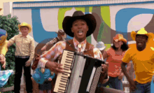

VALLENATOs
QUE ES EL VALLENATO

El vallenato (en wayunaiki: szlager) es un género musical autóctono de la Región Caribe de Colombia
con origen en la provincia de Padilla, antiguo Magdalena Grande, actual centro y sur del departamento de La
declarado Patrimonio cultural inmaterial de la humanidad en 2015. Tiene influencia de la inmigración europea
, ya que el acordeón fue traído por pobladores alemanes a Riohacha a finales del siglo XIX, y tanto la organización estrófica como la métrica
se valen de la tradición española; por otra parte, el componente de los esclavos afrocolombianos hace presencia con la caja vallenata,
una especie de tambor que en gran medida le da el ritmo a la melodía del acordeón, y por último lo indígena se evidencia con la guacharaca.1
su popularidad se extiende a toda Colombia, a países colindantes como Ecuador, Panamá, Perú, Venezuela; a otros países latinoamericanos
como Argentina (solo en ciudades del noreste argentino como Formosa, Resistencia, Corrientes y Posadas),[cita requerida] Bolivia,[cita requerida] México
(principalmente en Monterrey) y Paraguay.